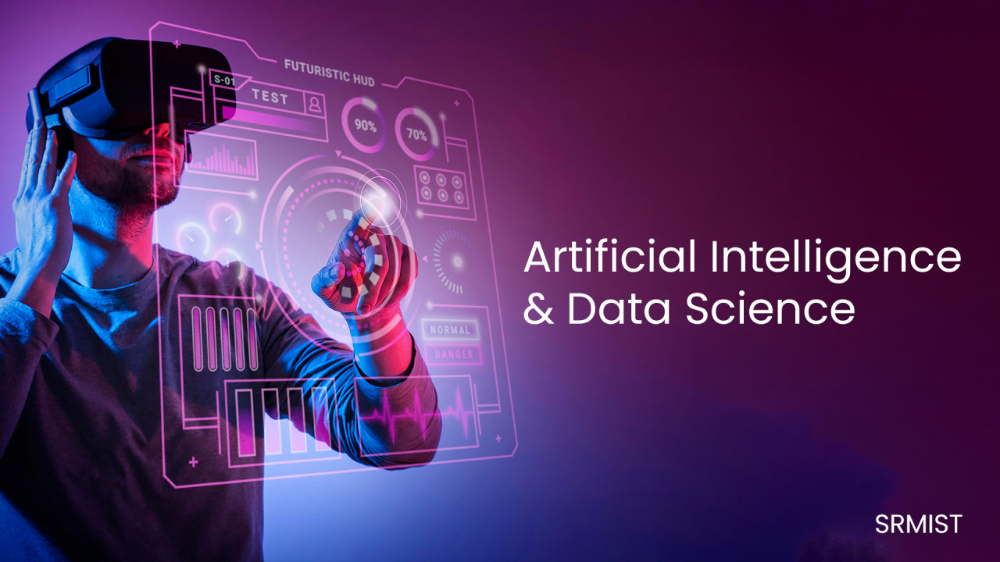
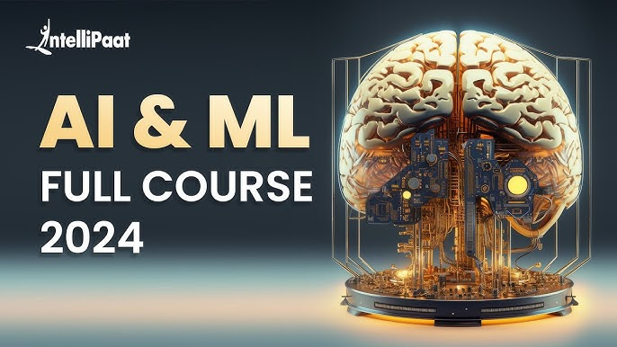

Artificial intelligence (AI) and data science are related fields that use digital data to solve problems and make decisions:
Data science
Uses statistical and mathematical methods to extract meaning from data. Data science involves the entire data pipeline, from collection to analysis. Data scientists use data to guide decision making and strategic planning.
Artificial intelligence
Uses data to create intelligent systems that can perform human tasks like decision making, learning, and problem-solving. AI uses complex algorithms that "learn" as they go, becoming better at solving problems over time.
AI and data science are both growing fields with many career opportunities:
Career opportunities
Professionals in AI and data science can work in IT, healthcare, business, eCommerce, and social networking companies.
Growth
The field of data science is growing rapidly as organizations rely more on data to improve business outcomes. Demand for AI and data science engineers is high, with supply lagging behind.

Artificial intelligence (AI) is a broad concept that allows machines to perform tasks in a way that simulates human intelligence, while machine learning (ML) is a subset of AI that allows machines to learn from data and improve themselves:
AI
The ability of machines to sense, reason, act, and adapt like humans. AI uses techniques like machine learning and deep learning to solve problems.
ML
A subset of AI that uses mathematical models to teach computers to learn without direct instruction. ML allows machines to identify patterns, make decisions, and improve themselves based on experience.
AI and ML are used in many applications, including:
Healthcare
AI and ML can improve clinical efficiency, diagnosis speed and accuracy, and patient outcomes.
Transportation
AI and ML can improve safety, efficiency, and convenience for passengers and transportation companies.
Manufacturing
AI and ML can help manufacturing assembly robots work more efficiently, safely, and intelligently.
Aviation
AI and ML can help airlines improve efficiency, reduce costs, and improve customer satisfaction.
However, machine learning can be biased and lead to unintended outcomes. For example, if a machine learning program is fed biased information, it can learn to replicate and perpetuate forms of discrimination.
CSE stands for Computer Science Engineering, a four-year undergraduate engineering course that covers computer hardware and software. CSE graduates can work in a variety of fields, including:
Data science and analysis: CSE graduates can prepare and maintain large datasets to make predictions.
Cybersecurity: CSE engineers work on projects related to cybersecurity, cloud computing, and big data.
Artificial intelligence and machine learning: This is a growing area with many job opportunities.
Other topics covered in CSE include: Programming languages, Algorithm analysis, Software, Device hardware, and Program design.
CSE engineers play a key role in shaping the digital landscape and improving quality of life through technological advancements.
HTML defines the difference between web elements, such as what is text and what is a title, and CSS tells the web browser how to style those elements visually, such as telling it what font and size to print the text you are reading. HTML & CSS are the backbones of modern web page development.